Rule variations
Table of Contents
1 How is Underground Defined?1.1 Below a specific Y coordinate doesn't work in the current version
1.2 What about the obvious definition?
1.3 What is the ground made of?
1.4 What about the Nether and End?
1.5 So how are we defining what is underground?
2 For Impatient Players
2.1 Use a Set Seed with Lush Caves at Spawn
2.2 Turn On Bonus Chest
2.3 Use a Set Seed with an Abandoned Mineshaft at Spawn
2.4 Collect Wood Before Going Underground
Introduction
In theory, the rules for this challenge should be simple:
when the game starts, immediately dig underground and stay there.
But that begs the question: what qualifies as "underground"?
Furthermore, how are you supposed to play Minecraft survival
without access to wood (for crafting) and food?
This page will address these issues.
How is Underground Defined?
Below a specific Y coordinate doesn't work in the current version
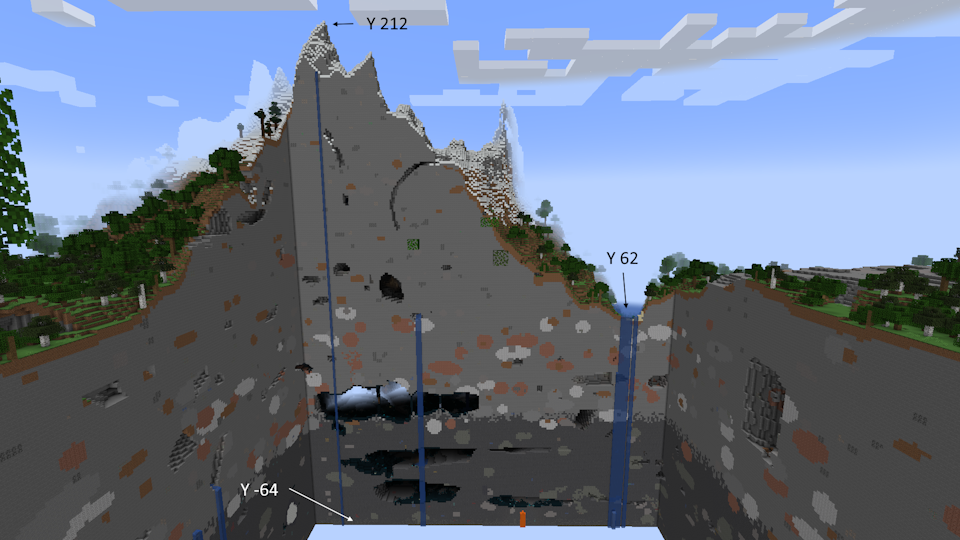People I've seen attempt this challenge in the past defined underground as being below a certain Y coordinate. I reject this definition. As visualized in the image in this section, the world surface on land can vary by at least 150 blocks. Sea level is Y:62, the ocean floor is near Y:30, and mountain peaks can reach Y:212. With the bottom of the world being Y:-64, any Y-level below sea level excludes nearly half of the potential height of the underground. Y-levels above sea level would include the world surface near the sea. So there is no good Y coordinate to use for this definition.
What about the obvious definition?
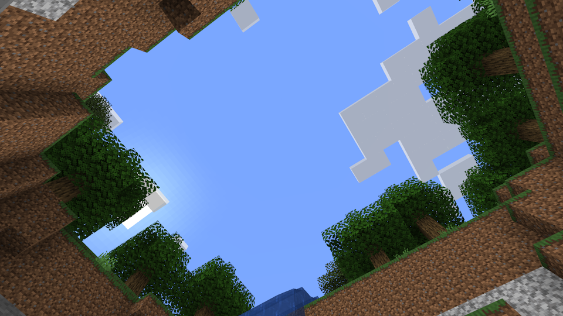The most obvious definition for what is underground is that there is a block above your head, with the clarification that you aren't in a building. But even this definition has a problem in sinkholes/vertical cave entrances. As seen in the second image, it is possible to be in a cave while being exposed to the sky. In extreme cases, these holes can go all the way to the bottom of the world, as demonstrated in this YouTube video. I would say, if the player is in one of these holes, that they are still underground even though they have sky access.
What is the ground made of?
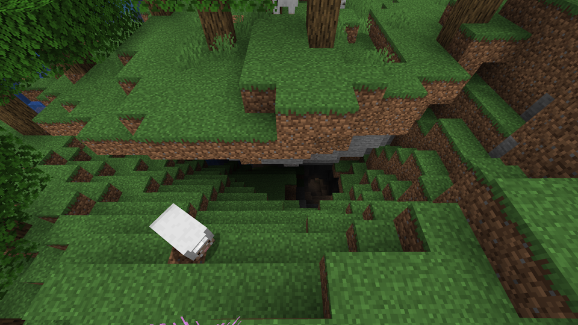The obvious fix to the edge case in the previous paragraph is to check what block is below the player's feet; if it's stone or another cave material, they're underground, while if it's grass or another surface material, they're above ground. This definition would have worked perfectly fine in older versions of the game, assuming the player wasn't in an Extreme Hills (Windswept Hills) biome, which typically have exposed stone on the surface. But nowadays, it is common for near-surface caves to be floored with the surface material, an occurrence that was formerly quite rare. Thus, this definition fails as well.
What about the Nether and End?
Popular Minecraft cosmology suggests that the Nether is below the surface of the Overworld, whether it's below a flat Earth or at the core of a round or square Earth. In contrast, the End is commonly believed to be above the surface of the Overworld, off in space somewhere. Basing the rules of this challenge on popular cosmology would therefore permit access to the Nether while banning access to the End.
But let's look at this problem from a challenge runner's perspective, instead of from a theoretical perspective. The commonly accepted ending point for challenge runs of Minecraft is when the Ender Dragon is killed, since this is the official "End" of the game and the event that triggers the End credits (once the exit portal is entered). For this to even be possible, visiting the End is absolutely mandatory. Barring seeds with an End Portal already open, visiting the Nether is also mandatory as the player needs to obtain Blaze Rods to craft Eyes of Ender to open the End Portal.
Finally, we can try applying the Overworld ruleset to the Nether and End. In the Nether, there is always a roof above your head, composed of both Nether blocks such as Netherrack, and Bedrock. The End, however, has no such barrier, above or below the world. But what the End does have is a complete lack of sky light.
The Nether's categorization as underground is pretty definitive. The End is less clear, but since it is required to complete the primary objective, we are forced to allow the player to visit it as well. That being said, the End has a distinct lack of resources, even more so than the underground or the Nether. So I have no issues with allowing access to the End in challenge runs.
So how are we defining what is underground?
Ultimately, it doesn't really matter, as the exact rules are up to the player taking the challenge. This guide is written with the assumption that the player will never see the sky above them. That being said, this is my preferred ruleset:
- If there is a ground block above the player's head, the player is underground .
- If there is a continuous ring of ground blocks encircling a point above the player's head, the player is in a sinkhole.
- If the player is in a sinkhole, the floor is made of an underground material, and the floor doesn't match the surface material, the player is underground .
- If the player is in a sinkhole with the floor made of a surface-only material such as grass, the player is on the surface .
- If the player is in a sinkhole with a floor of an underground material that matches the nearby surface (e.g. stone in a Windswept Hills), the player is underground if either the hole is at least 5 blocks deep, one of the sides is overhanging, or it is not possible to climb out of the hole without breaking or placing blocks.
- Leniency is given when returning to the Overworld from the Nether, since if the portal was built from the Nether side, the player has little control of the elevation at which the new portal spawns in the Overworld.
For Impatient Players
Getting wood and food, two of the most important resources, can be very difficult in this challenge. Without wood in particular, you are unable to make tools. Without tools, you can break blocks, but doing so takes a long time. If you're like me, you don't want to waste hours of your life digging through stone without the proper tools, looking for some of the one resource that will allow you to create those tools.
For such players, I have four options that allow one to bypass this hurdle, with a varying impact on the remaining challenge.
Option 1: Use a set-seed world with a Lush Caves at spawn
There are only two ways of getting renewable wood in the underground: bring trees down from the surface with you, and find a Lush Caves biome. Fortunately, above Lush Caves biomes is the only place azalea trees grow naturally, and said azalea trees' root system forms a column of easily-minable Rooted Dirt blocks that always lead down into a lush cave.
So an easy way of ensuring you have access to renewable wood early on is to use a set seed with a Lush Caves close to spawn.
Here are a few world seeds that satisfy that requirements. These are all desert seeds, which makes finding the azalea tree easier at the cost of the rooted dirt being interrupted by a layer of sandstone (which is easier to mine than stone, but harder than dirt).
| Seed | Screenshot | Azalea location |
| 359162070282797056 | 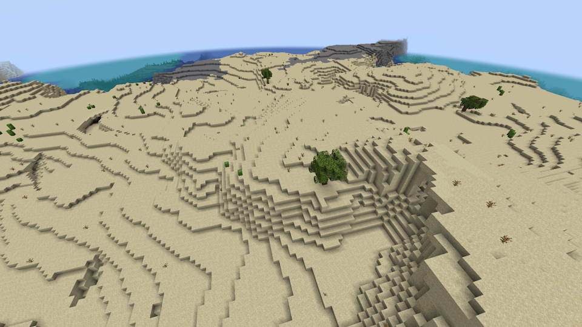 |
Java: Hard not to find one Bedrock: Along the sandy shore, in the water beyond the village |
| -1232798811736812490 (Java) | 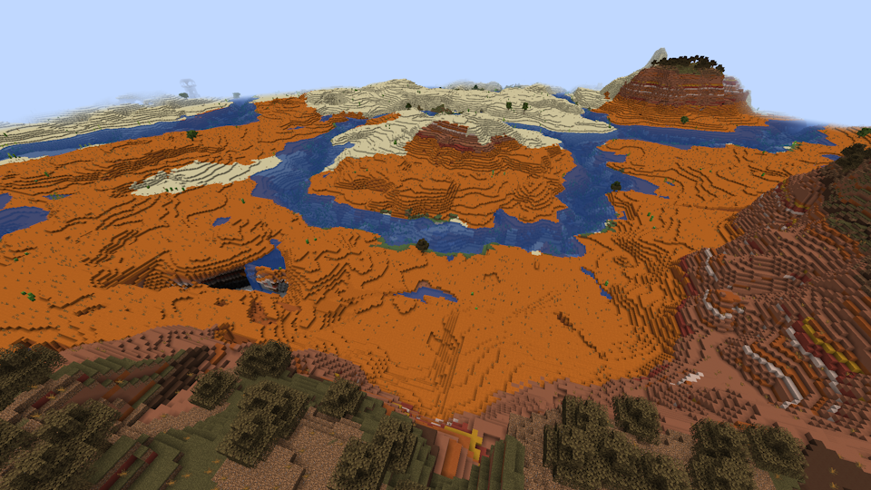 |
Follow the looping river (In Bedrock the Lush Caves are still there but the azaleas aren't) |
| -7621768151940122137 | 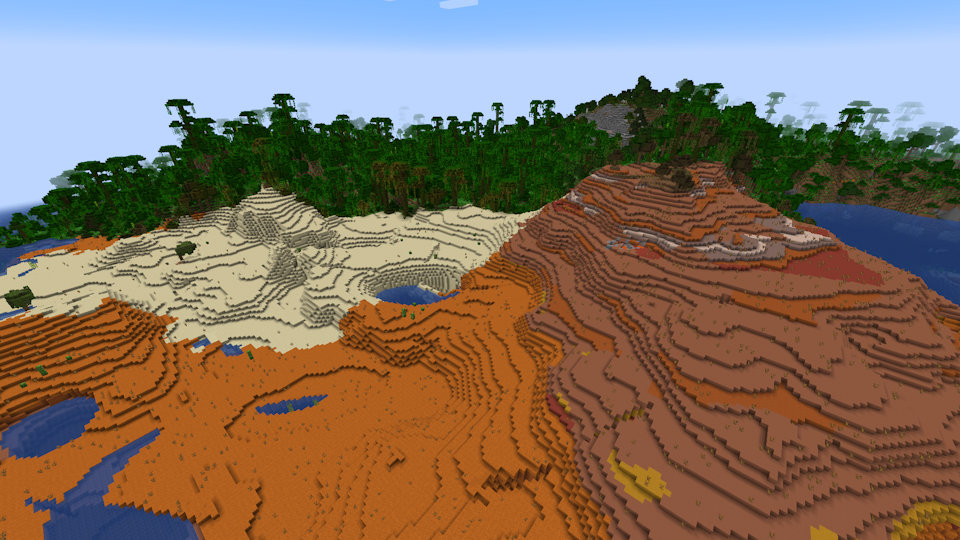 |
Java: Head along the edge of the jungle Bedrock: None, but there is a cave entrance surrounded by vines near where the azaleas were in Java Edition, with a pit just inside leading to the Lush Caves below |
| 4977439733753807668 | 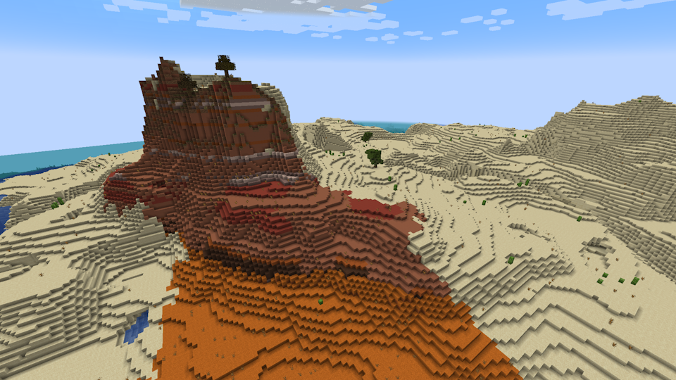 |
Over the closest hill (this is the seed I used) Bedrock: None, but a large cave entrance at (39, -73) leads directly to a Lush Caves |
Option 2: Turn on Bonus Chest
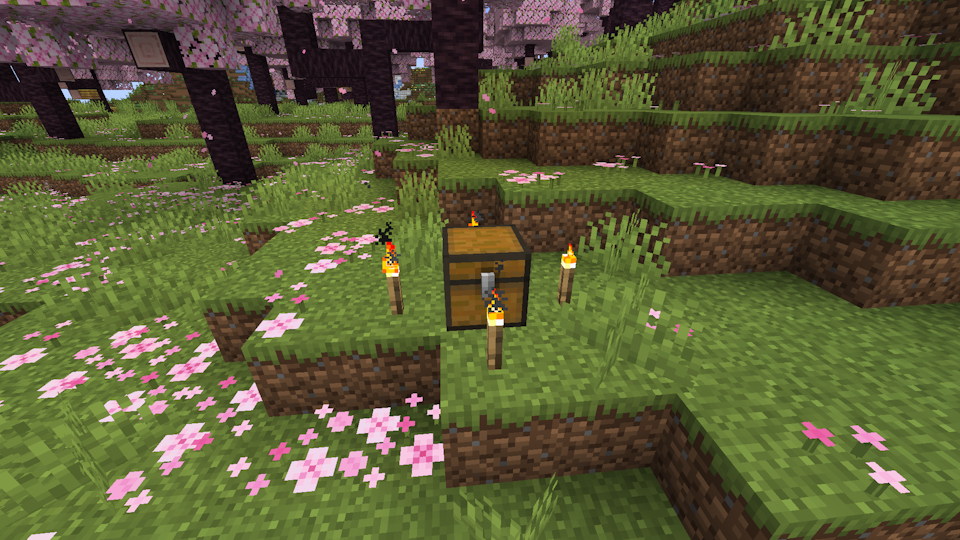The Bonus Chest feature allows you to start a world with a chest containing some food, some wood, and basic tools. It can be turned on in the More World Options page (same page as the one on which you enter a custom seed) when creating a world.
Once you've created a world with the Bonus Chest, the actual chest will appear somewhere near spawn, surrounded by up to four torches.
Doing this doesn't grant you renewable wood access (unless you play on Bedrock Edition and get a sapling), but it does give you a little taste of the early portion of the challenge before your tools inevitably break.
Option 3: Use a set-seed world with an Abandoned Mineshaft at spawn
Abandoned Mineshafts are a structure that generates underground and is almost entirely comprised of wood. There is a finite amount of wood that can be harvested from the structure, on top of the presence of nasty Cave Spiders, but the wood that is there, along with the loot from the chest minecarts, should keep you going for a little while.
It should be noted that Abandoned Mineshafts leave no indication of their presence on the surface (except the Mesa variant, which in Java Edition generates at surface level) and are comprised of long 3-block wide passages, meaning even if you dig down directly above one then missing it is a distinct possibility. So unless you choose a Mesa Mineshaft seed, this isn't a very reliable starting method.
Here are a few Abandoned Mineshaft seeds.
| Seed | Screenshot | Mineshaft location |
| 3682228553919745525 (Java) | 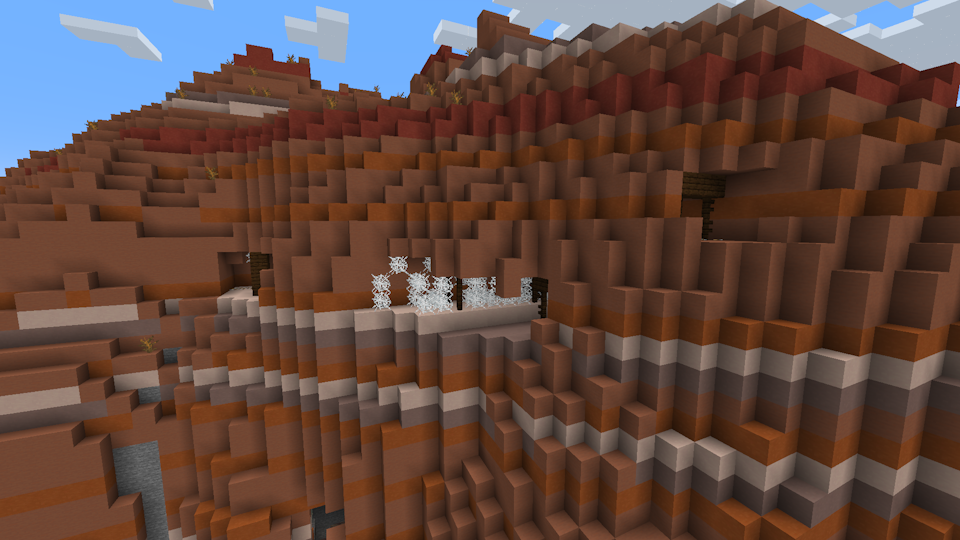 | In the pit at (-86, 124); another at (-264, -93) |
| -6348815375313260649 (Java) | 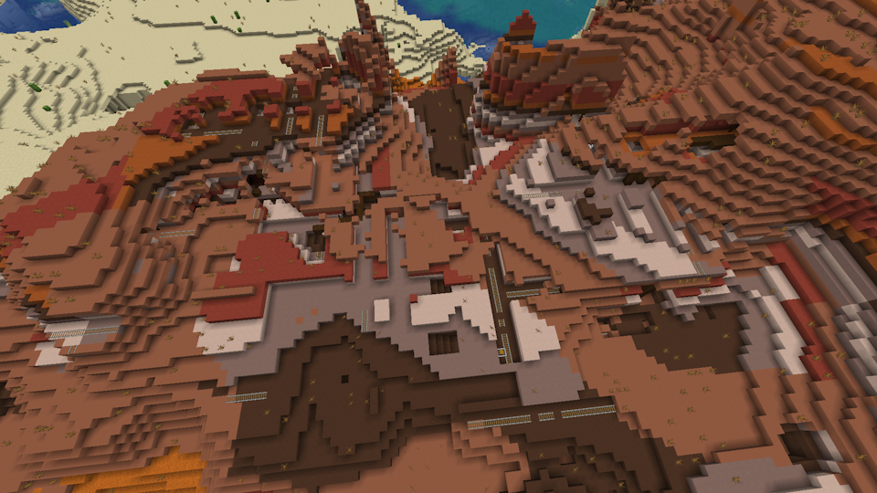 | (102, 169) |
| 8641 (Bedrock) | 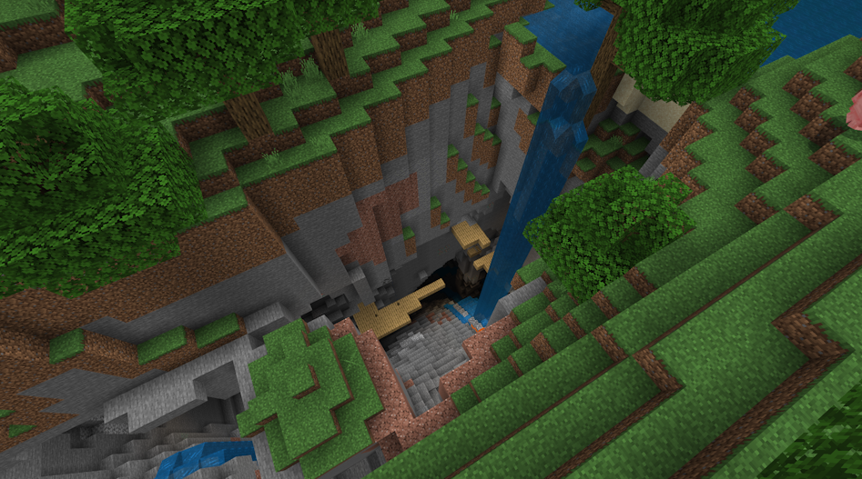 | In the chasm next to spawn |
Option 4: Simply collect wood and food before going underground
Both wood and food are most easily found on the surface, so the simplest way of getting them both underground is to bring them down from the surface. Ordinarily this would violate the primary rule of the challenge, but I've made this exception for myself in the past, before Lush Caves were added to the game.
Obtaining a sapling from a tree gives you renewable wood, as well as apples if it was an Oak sapling. Breaking tall grass has a chance of getting you Wheat Seeds. Both of these resources can be grown fully underground once you have access to them, so that's all you really need to collect prior to heading underground.
A fun way of implementing this exception is to give the player until the sun sets to collect resources, after which they must dig underground and stay there.